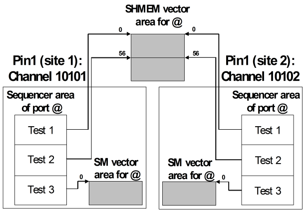

Selecting the memory type
Every label is associated with one of three memory types, SM, SHMEM, or HSER. SM is the standard type; the purpose of SHMEM is to allow different sites of the same pin to share their vector areas physically under certain conditions. For HSER see Defining a compliance pattern for pattern‑based SmartLoop testing.
SM is the default, but as long as no vectors have been defined for the label, you can change the memory type with the SQLA command, for example:
SQLA LBL,"test_2","PARA_MEM=SHMEM"
The differences between the two types with regard to multiple sites are as follows.
Site management with SM
With SM, different channels always have different vector areas. Therefore, if different sites of the same pin are assigned to different channels (which is usually the case), the vector data of these sites can be different. This is actually achieved by modifying the multi-site setup focus accordingly (with PSFC; for details see Setting the setup focus).
Site management with SHMEM
With SHMEM, the channels that are assigned to different sites of the same pin physically share their vector areas, provided that these channels belong to the same 4-channel group or 8-channel group (Channel groups of Smart Scale cards). You can associate some labels of a port with SHMEM, and the rest with SM, in parallel.
You can use SHMEM also if the respective channels belong to different 4-channel groups (8-channel groups) or to a Pin Scale system. In this case the vector areas of the channels will be physically different, but logically identical; that is, any change of the vector data will always be executed for all sites. This is independent of the setup focus; the change will also be executed for those sites that are not within the current setup focus.
Example
The following figure illustrates how the vector areas of different sites can be physically shared if the respective channels belong to the same 4-channel group of a Pin Scale 9G system. It also shows that a SM vector area and a SHMEM vector area can exist in parallel for the same port.

Functional changes
- Introduced in SmarTest 7.0.1